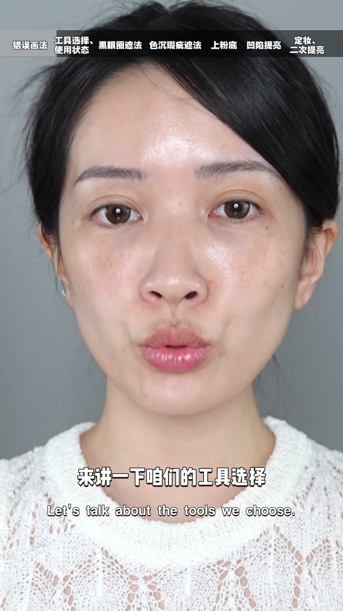
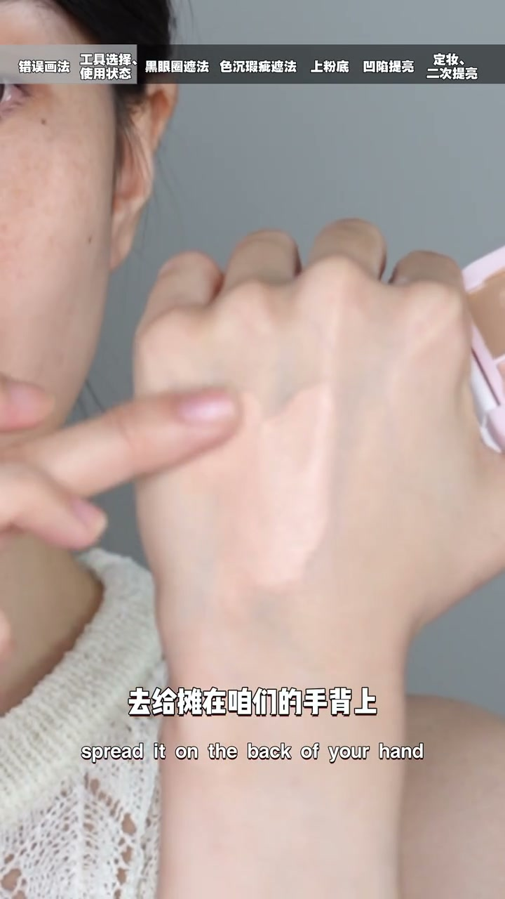
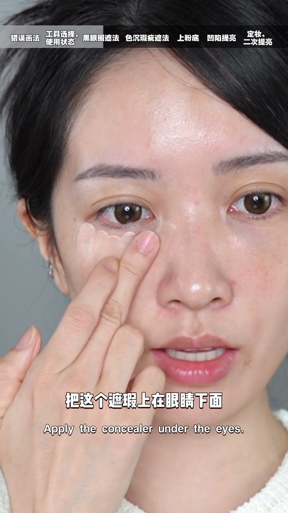
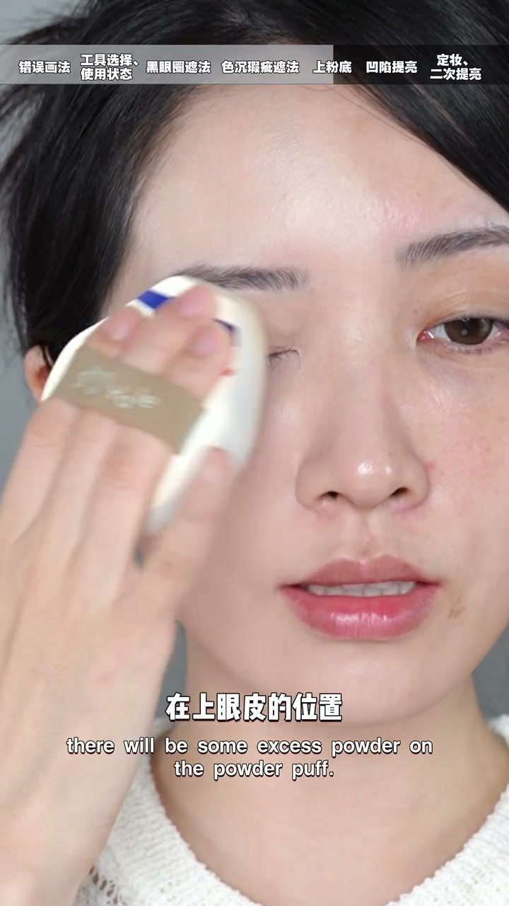

01
中文
多少姐妹上遮瑕不是用手指就是在用刷子戳戳戳。
EN
So many of you dab concealer with fingers or a brush.
表达提示dab concealer（戳遮瑕）

Scene English · 美妆 · 遮瑕教程
Zero-Base Makeup: 3-Min Full Concealer Tutorial for Beginners
🎧 语音讲解
Opening: how many of you dab concealer on …
情境常见错误：乱戳+定妆后回潮。
多少姐妹上遮瑕不是用手指就是在用刷子戳戳戳。
So many of you dab concealer with fingers or a brush.
表达提示dab concealer（戳遮瑕）
拍开之后不仅没遮住，还卡纹又卡粉。
After patting, it's not covered—plus creasing and caking.
表达提示crease and cake（卡纹卡粉）
一到定妆的环节，遮好的瑕疵又全都跑出来了。
At the setting step, the covered flaws all come back.
表达提示come back（回潮）
dab concealer（戳遮瑕
crease and cake（卡纹卡粉

Tool choice and activation: three-tone or …
情境激活+摊薄是膏状遮瑕前提。
三色或者双色的遮瑕，已经把颜色给大家调好了。
Three-tone or two-tone palettes are pre-mixed for you.
表达提示pre-mixed palette（调好的盘）
膏状的遮瑕膏用之前要先用手指揉一揉，激活一下。
Activate the cream concealer by rubbing it with a finger first.
表达提示activate（激活）
摊在手背上摊薄，再去上脸。
Spread it thin on the back of your hand, then apply.
表达提示spread thin（摊薄）
pre-mixed palette（调好的盘
activate（激活

Under-eye first touch: eyes move a lot, so…
情境第一笔从眼尾起，粉薄不易卡。
眼睛动得多，眼下的纹路也比较多。
Your eyes move a lot, so the creases are many.
表达提示many creases（纹路多）
如果遮瑕第一笔摁在眼头，这里的粉就会是最厚的，容易卡粉。
A first dab at the inner corner leaves the thickest product, which cakes.
表达提示thickest product（粉最厚）
所以遮瑕第一笔从眼尾开始，从后往前。
So start the first touch at the outer corner and move forward.
表达提示outer corner first（眼尾起笔）
手指有温度，拍的过程会让遮瑕和皮肤融合得更好。
Finger warmth helps the concealer blend into the skin.
表达提示finger warmth（手指温度）
many creases（纹路多
thickest product（粉最厚

Covering spots: switch to an angled mushro…
情境色斑点戳遮，结构瑕疵后置。
换成一把斜角的蘑菇刷，它的毛是比较密的。
Switch to an angled mushroom brush with dense bristles.
表达提示angled mushroom brush（斜角蘑菇刷）
沾好遮瑕在手背上晕一晕，然后垂直戳在有色斑的地方。
Blend on your hand, then dab vertically on the spots.
表达提示dab vertically（垂直戳）
泪沟、法令纹、嘴角凹陷这种结构型的瑕疵，放到粉底液之后来遮。
Structure-based flaws go after foundation.
表达提示structure-based flaws（结构型瑕疵）
dab vertically（垂直戳

After foundation: use leftover powder on t…
情境余粉融合+亮色精准补泪沟。
粉扑上会有一些余粉，在上眼皮和下眼睑拍一拍，让遮瑕和全脸融合。
Use leftover puff powder on the lids to fuse the concealer with the face.
表达提示leftover powder（余粉）
用小刷子沾最亮的遮瑕色，精准画在眼下泪沟的地方。
A precise brush picks the brightest shade, drawn on the tear trough.
表达提示brightest shade（最亮色）
原地垂直拍开，多的余粉上下慢慢晕染过度。
Pat in place, blending the excess up and down.
表达提示blend the excess（晕开余粉）
泪沟严重就少量多次叠加，再拍开。
For deep troughs, build up in thin layers.
表达提示thin layers（少量多次）
leftover powder（余粉
brightest shade（最亮色

Setting and finish: a deep tear trough wit…
情境哑光高光二次提亮+定妆。
泪沟严重不做眼下定妆，换个角度还是会看出来。
A deep trough without setting still shows from other angles.
表达提示still shows（还是看得出来）
植绒粉扑捏起一个角，沾取哑光高光，精准拍在眼下。
Pinch a velour puff corner, pick up matte highlighter, pat on the under-eye.
表达提示velour puff（植绒粉扑）
既做了二次提亮，又可以起到定妆的效果。
It brightens again and sets at the same time.
表达提示brighten and set（提亮+定妆）
远看近看都看不出什么破绽，眼下鼻翼也没有卡粉。
No tell from near or far, and no caking at the under-eye or nose.
表达提示no tell（无破绽）
still shows（还是看得出来
velour puff（植绒粉扑
说遮瑕激活
说眼下第一笔
说色斑手法
说结构瑕疵
说定妆提亮
第一笔从眼尾起，眼头粉才薄。
泪沟法令纹等结构瑕疵要放在粉底之后。
膏状遮瑕不激活会卡纹卡粉。
泪沟严重必须定妆，哑光高光二次提亮。
泪沟严重要少量多次叠加。